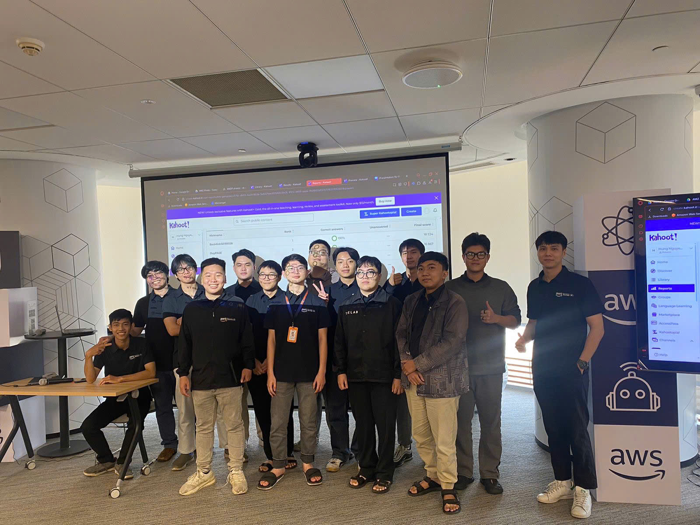

Event 1
⚠️ Lưu ý: Thông tin dưới đây chỉ mang tính tham khảo. Vui lòng không sao chép nguyên văn vào báo cáo chính thức, bao gồm cả phần cảnh báo này.
Summary Report: “AI/ML/GenAI on AWS Workshop”
- Date: Saturday, November 15, 2025
- Time: 8:30 AM – 12:00 PM
- Location: AWS Vietnam Office
Event Objectives
- Giới thiệu tổng quan về hệ sinh thái AI/ML tại Việt Nam
- Hiểu về các dịch vụ AI/ML trên AWS, đặc biệt là Amazon SageMaker
- Học cách xây dựng ứng dụng GenAI với Amazon Bedrock
- Nắm vững các kỹ thuật Prompt Engineering, RAG và Guardrails
- Trải nghiệm demo thực tế từ AWS experts
Agenda & Key Contents
8:30 – 9:00 AM | Welcome & Introduction
- Đăng ký và networking giữa các participants
- Giới thiệu mục tiêu workshop và kỳ vọng
- Hoạt động ice-breaker để kết nối các nhóm
- Tổng quan landscape AI/ML tại thị trường Việt Nam
9:00 – 10:30 AM | AWS AI/ML Services Overview
Amazon SageMaker – Nền tảng ML End-to-End
- Chuẩn bị dữ liệu & gắn nhãn (data preparation & labeling)
- Train, tune và deploy mô hình ML
- Quản lý toàn bộ lifecycle mô hình với MLOps tích hợp
Live Demo:
- Trải nghiệm giao diện và workflow thực tế trên SageMaker Studio
10:30 – 10:45 AM | Coffee Break
10:45 AM – 12:00 PM | Generative AI with Amazon Bedrock
Foundation Models
- So sánh Claude, Llama, Titan
- Hướng dẫn chọn mô hình phù hợp từng use case
Prompt Engineering
- Kỹ thuật viết prompt
- Chain-of-Thought reasoning
- Few-shot prompting
RAG (Retrieval-Augmented Generation)
- Kiến trúc RAG
- Tích hợp Knowledge Base vào ứng dụng
Bedrock Agents
- Thiết kế workflow đa bước (multi-step)
- Tích hợp tool và API vào tác vụ
Guardrails
- Kiểm soát an toàn nội dung
- Cơ chế lọc output theo policy
Live Demo
- Build một GenAI chatbot với Amazon Bedrock
Key Takeaways
1. AI/ML on AWS
- SageMaker cung cấp bộ công cụ end-to-end cho toàn bộ vòng đời ML
- Việc chuẩn hóa quy trình MLOps giúp tăng tốc triển khai sản phẩm AI
2. Generative AI Capability
- Foundation Models giúp giảm chi phí và thời gian huấn luyện
- Prompt engineering là yếu tố quyết định chất lượng output
- RAG là phương pháp tối ưu khi cần dữ liệu cập nhật hoặc private
3. Bedrock Ecosystem
- Bedrock Agents giúp xây dựng ứng dụng GenAI phức tạp mà không cần nhiều backend
- Guardrails là thành phần không thể thiếu để đảm bảo tính an toàn
Event Experience
Tham gia workshop “AI/ML/GenAI on AWS” mang lại nhiều kiến thức giá trị cả về kỹ thuật lẫn ứng dụng thực tế:
Học từ chuyên gia AWS
- Nắm được insight về chương trình ML/GenAI doanh nghiệp đang triển khai tại Việt Nam
- Hiểu rõ các lựa chọn mô hình foundation và khi nào nên sử dụng
Trải nghiệm thực hành
- Demo SageMaker Studio giúp hình dung quy trình ML đầy đủ
- Xây dựng chatbot GenAI bằng Bedrock giúp nắm rõ kiến trúc RAG & agents
Kỹ năng thu được
- Kỹ thuật prompt engineering nâng cao
- Tư duy thiết kế ứng dụng GenAI phù hợp với business use case
- Hiểu cách tích hợp AI vào workflow doanh nghiệp
Networking
- Kết nối với các chuyên gia, SA và cộng đồng AI tại Việt Nam
- Thảo luận case thực tế và cách áp dụng AI trong vận hành doanh nghiệp
Lessons Learned
- GenAI cần được xây dựng trên nền dữ liệu tốt và guardrails chuẩn
- Không phải mọi bài toán đều cần fine-tuning; chọn Foundation Model phù hợp sẽ hiệu quả hơn
- Sự kết hợp giữa SageMaker + Bedrock mang lại pipeline ML/GenAI hoàn chỉnh
Event Photos

Tổng thể, workshop giúp tôi hiểu sâu hơn về AI/ML/GenAI trên AWS và cách ứng dụng vào thực tế doanh nghiệp. Đây là trải nghiệm hữu ích để phát triển cả kỹ năng kỹ thuật và tư duy thiết kế giải pháp AI.